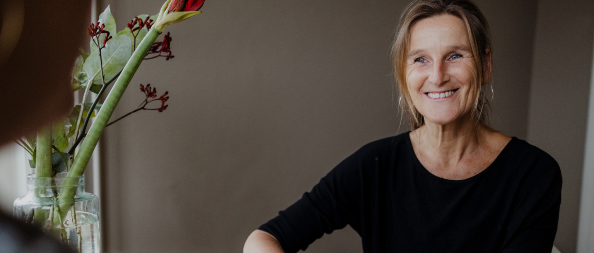

Helderheid, preventie en ondersteuning
Coaching geeft helderheid, werkt preventief en is ondersteunend.
Je zit in een dip, lastige levensfase, lusteloos, veel onrust, leeg gevoel, slaapt bijna niet, je loopt met je ziel onder de arm, je voelt dat het werk niet meer bij je past, je een keuze moet maken maar er niet uit komt, je weet het even niet meer.
Iets knelt en dat is niet voor niets. Waarom zou je zo'n situatie laten voortduren in je werk of privéleven? Hulp mag je vragen, dat is juist krachtig. Je hoeft het niet alleen te doen bij de verandering waar je doorheen gaat.
Coachsessies geven je ruimte, letterlijk en figuurlijk naar wat er leeft in jou. Bij coaching leer je ook het onprettige te accepteren. Beseffen dat moeilijke momenten en levensfases bij het leven horen. Niet alles is maakbaar.
In een coachsessie ga je kijken naar het groter geheel op fysiek, mentaal en emotioneel niveau en dat geeft overzicht, rust en ruimte in je hoofd. Hierdoor zal je minder stress en meer ontspanning ervaren en innerlijk in balans komen.

Elk coachingstraject is maatwerk en afgestemd op jouw vraag en behoefte en leren omgaan met het leven! Dit bespreken we in een vrijblijvend kennismakingsgesprek waarna een offerte kan volgen voor jou of je werkgever. Bij akkoord gaan we van start.
Vraag bij je werkgever vanuit 'het ontwikkelingsbudget voor personeel', vitaliteit of 'preventief ziekteverzuim' naar vergoeding van de kosten voor een coachingstraject.
Bij een particulier traject is vergoeding eventueel aftrekbaar van de Belastingdienst mits je dit gebruikt voor het verkrijgen van een nieuwe baan of als leertraject gericht op functioneren van je werk. Neem voor meer info hierover zelf contact op met de Belastingdienst.
Ik geef huiswerkopdrachten mee waar je tijd, aandacht en energie voor moet reserveren. Mijn ervaring is dat dit 'de verandering ' in beweging brengt.
Als externe deskundige luister ik en denk ik mee. Ik stel 'kritische en onderzoekende' vragen en zet samen met jou zaken op een rijtje. Ik inspireer, spoor aan om stappen te zetten en in beweging te komen om goed voor je zelf te zorgen.
Ik werk o.a. met cognitieve gespreksmethodes vanuit de positieve-en boeddhistische psychologie, RET (rationeel emotionele therapie), het koersonderzoek voor loopbaanvragen, kernkwadranten en systemisch werken. Inspiratie voor ontspanning in lichaam en geest haal ik uit lichaamsgerichte methodes zoals yoga, meditatie, stress release en ademwerk.
Altijd is er de mogelijkheid om meerdere sessies bij te boeken.
| Aantal sessies | 4-6 sessies |
|---|---|
| Duur | 1,5 uur |
| Locatie | het Heelhuis, centrum voor gezondheid, welzijn en balans Rikkelder 22c – 7261BE Ruurlo |
| Werkdagen | werkdagen donderdag en vrijdag |
De werkgever vergoedt vaak coaching in het kader van persoonlijke ontwikkeling, stressreductie, vitaliteit of preventief ziekteverzuim. Vraag hiernaar bij je werkgever.
Indien je een afspraak moet afzeggen of verzetten, dan verzoek ik je dit minimaal 24 uur van tevoren door te geven. Afspraken die binnen 24 uur voor de geplande tijd worden afgezegd, zullen volledig in rekening worden gebracht.
Bij iedere les of sessie is het mijn doel om mensen een gevoel van ’thuis komen’ te geven. Heb je een vraag of wil je een afspraak maken? Neem gerust contact met mij op.